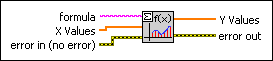

Eval Single-Variable Array VI
Owning Palette: 1D & 2D Evaluation VIs
Requires: Full Development System
Calculates an array of function values at given points in a given interval by y[i] = f(x[i]) for i = 1, …n, where f is the 1D function given by the user formula.

 Add to the block diagram Add to the block diagram |
 Find on the palette Find on the palette |